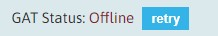

Getting Started with Genemede
This aims to be a comprehensive tutorial on how to get Genemede up and running on your computer.
Setting up the GAT
- Clone the repository at github
- Setup a python virtual environment
cd gnmd-gat
python -m venv env
source env/bin/activate | env\Scripts\activate.bat `(if on windows)`
pip install -r requirements.txt
If you want to create fake data for testing, follow these steps:
- Create a
.envfile on the project root or copy.env.exampleto.env - Set
ALLOW_NUKER=1andALLOW_FAKER=1on the.envfile - Create fake data by running
python util.py faker
Using the GAT
You can check out the available command-line options with python util.py
The GAT is a flask application, and as such you can list all available API routes using flask routes
To start the API server, enter python serve.py
Using the GUI
You can run your own build of the GUI, or you can use our own public deployment here.
The Home Tab
When you open the GUI application, it will try to connect to your local GAT. If successful, you will see a green checkmark along with your user information and avatar on the top right of the screen.
If the GUI fails to connect to the GAT, there will instead be a red icon on the user information area.
On the GUI homepage there will be a button that allows you to retry the connection:

If all went well, you will now have several buttons that allow you to directly create an instance of the default metadata types:
Clicking on any of these will take you to the appropriate form. You can then fill in the values and save the record.
The Data Tab
The Data tab is the main point of entry to all of the available data. You can create new records, see various statistics about your data, search on individual metadata types and export all your data to a single genemede json file.
The Search Tab
For now, there is only a simple text search on all the data. You can enter any text and press the search button to navigate on the results. On each row, the details button will open the corresponding form for the record.
Genemede Forms
The Genemede forms allow a wide range of data types, mirroring the specifications on the underlying metadata definitions.
-
Short and long text fields
These are simple text values, and the choice of a single or a multi line editor is given by the metadata type definition.
-
Date and time fields
For entering values such as dates, times and timestamps.
More user-friendly editors are being developed to allow entering various combinations of dates, times and timestamps, but for now they are simple text editors with the value in ISO format. -
Boolean fields
Simple true/false selectors, although the true and false textual values can be defined by the underlying metadata type definition.
More user-friendly editors are being developed to allow better functionality. -
Selection fields
These are selectable values from a controlled data source, controlled by the metadata type definition. These fields only allow selecting a value from the corresponding data source.
-
Link Fields
These fields allows the creation of a link to another record. There can also be extra fields that can be used to further describe the nature of the link, defined by the underlying metadata type definition.
-
Modules
Modules are groups of fields than can be repeatable. They can include every other type of field except modules.
Beta Testing
Here's a brief, step-by-step guide on how to get acquainted with how Genemede works. Your feedback will be greatly appreciated. As you work through the following steps, please provide constructive feedback here.
Step 1
Start by creating several researchers. The researcher metatype is used to define people that work in projects or laboratories.
To start, create 3-4 researchers. TIP: give them recognizable names, because you will be using these records on a different metatype soon. You can do this by going to the Data tab and clicking create on the researcher group.
Step 2
After you're done with creating researchers, go back to the Data tab and create 3-4 subjects. The subject metatype is used to define any subject of a project or experiment.
As with researchers, they should have recognizable names, and a few will suffice, but of course you can create as many as you want.
The subject metatype is a good example of how modules work. Some of the modules are still in development but you can experiment with the human, mpi and visual modules, which have some examples of selection fields.
Step 3
Go back to the Data tab and create a lab record. On the lab metatype there is a members field that allows you to add links to the previously created researchers. You can use the add button on the Members field header to add a new item. Select a couple of your researchers and fill in the corresponding fields.
Save the record, go back to the Data tab.
Step 4
Create a new project. As with the lab record linking to researchers, you can create links to labs and subjects on a project. Any labs and subjects you created on the previous steps will be available for selection on the corresponding Labs and Subject fields.
Step 5
Now that you created several data records, you can experiment with searching and filtering. If you select any metatype on the Data tab, you'll see a table of all existing records of that metatype, and you can do a simple name filter using the text box above the table.
To try advanced search capabilities, head over to the Search page, where you can search for text in any field of any record.
Step 6
And finally, you can export all your data to a Genemede json file. Head over to the Data tab, and you can find a button to do just that near the top of the page. Genemede will combine all your records into a single json file, that you can download and inspect.